Collectivités & institutions publiques
136 entreprises · 196 articles · 16 magazines
Articles
Dossier
Trois grands chantiers qui redessinent la mobilité en Suisse romande
Les chantiers présentés par l’OFROU
Publireportage
Videsa SA – 60 ans à votre service, une histoire de famille
Assainissement et curage en Valais central
Éditorial
Le défi de faire entrer l'hôpital dans une nouvelle ère
Éditorial de Marc Devaud, directeur général (version allemande : Die Herausforderung, das Spital in eine neue Ära zu führen)
Interview
Il faut d'urgence préserver les urgences
Le professeur Ribordy tire la sonnette d'alarme
Interview
Les centres de santé, l'élément de proximité dans la structure de l'HFR
Entretien avec Dre Anne-Catherine Barras, médecin-cheffe adjointe, médecine interne générale
Publireportage
Les Ligues de santé – Fédérer les aides aux personnes souffrant de maladies chroniques
Company profile (version allemande : Gesundheitsligen – Bündelung von Hilfsangeboten für chronisch kranke Menschen)
Interview
La Région de Nyon, un laboratoire de la démocratie représentative
Interview de Gérald Cretegny, président de la Région de Nyon, syndic de Gland
Interview
La Région de Nyon, une pionnière en matière de mobilité
Interview de Pierre Graber, responsable de la mobilité au sein du comité de direction, syndic de Saint-Cergue
Interview
Maîtriser la densification du territoire
Interview de Frédéric Mani, responsable politique de la planification territoriale, syndic de Dully
Interview
Protéger l'environnement pour une meilleure qualité de vie
Interview de Gudrun Russig, responsable de l'environnement au sein du comité de direction, municipale à Signy-Avenex
Interview
Maintenir la diversité économique de la région
Interview de Daniel Rossellat, vice-président de la Région de Nyon et responsable de l'économie, syndic de Nyon
Interview
Fédérer les acteurs au service du rayonnement régional
Interview de Gérard Produit, responsable de la culture, du tourisme et du sport, syndic de Coppet
Interview
Morges – Une ville en pleine mutation
Interview de Vincent Jaques, syndic de la ville
Interview
Promotion économique – « L'économie morgienne est la pièce d'un puzzle entre Lausanne et Genève »
Interview de Pascal Rocha da Silva, délégué à la promotion économique de la Ville de Morges
Interview
Le Livre sur les quais célèbre la littérature sous toutes ses formes
Interview de Christelle Joly, cheffe de l'Office de la culture de la Ville de Morges
Portrait
Saint-Prex, bijou du Léman
Rencontre avec Daniel Mosini, syndic
Interview
Aubonne – Grandir modérément, tout en gardant son identité
Rencontre avec Luc-Étienne Rossier, syndic
Interview
Cossonay – Objectif : rester un pôle régional fort
Interview de Georges Rime, syndic
Interview
Préverenges, l'harmonieuse
Interview de Guy Delacrétaz, syndic
Interview
«Man kann den Bären nicht waschen, ohne das Fell nass zu machen.»
Interview mit Ständerat Dr. Beat Vonlanthen
Interview
Ville de Vevey
Interview de Monsieur Jérôme Christen
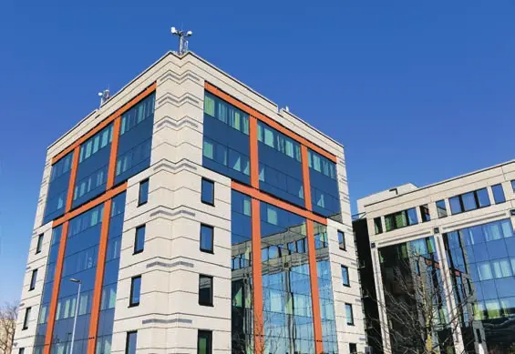
InterviewFavoriser la production d’énergie renouvelable
Interview de Konrad Rieder, Directeur des Affaires régulatoires des SIG
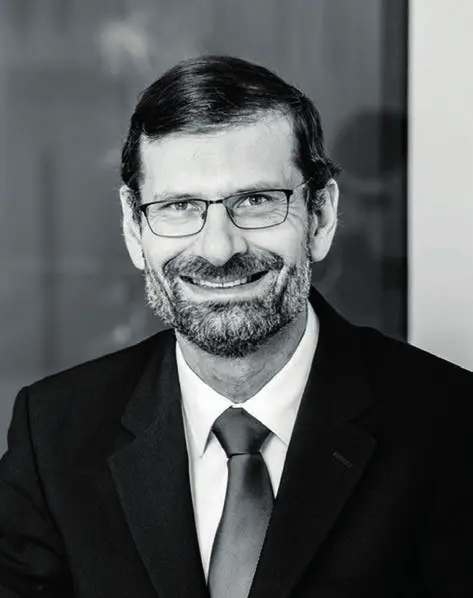
InterviewCanton de Vaud
Interview de Monsieur Laurent Balsiger, Directeur de l’énergie du Canton de Vaud
Interview
Canton du Valais
Interview de Monsieur Joël Fournier, Chef du service de l’énergie et des forces hydrauliques du Valais
Interview
Canton de Fribourg
Interview de Monsieur Serge Boschung, chef du Service de l’énergie Fribourg
Interview
Kanton Wallis
Interview mit Roberto Schmidt, Staatsrat, Chef des Departements für Finanzen und Energie
 Interview
InterviewStadt Aarau: «Die Energiestadt Aarau bekennt sich zu den Zielen der 2000-Watt-Gesellschaft»
Interview mit Dr. Hanspeter Hilfiker, Stadtpräsident
Interview
Kanton Basel-Stadt
Interview mit Regierungsrat Christoph Brutschin, Vorsteher Departement für Wirtschaft, Soziales und Umwelt
 Publireportage
PublireportageNeyruz pour un avenir durable
Interview de Martial Wicht, Syndic de Neyruz
Interview
Optimiser l’aménagement du territoire et la transition énergétique
Interview de la conseillère d’État vaudoise Jacqueline de Quattro
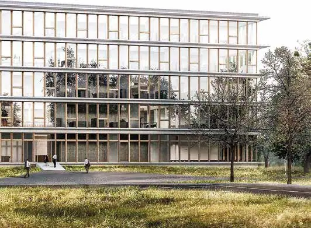
InterviewL’État de Vaud est un grand bâtisseur
Trois réalisations architecturales emblématiques – M. Emmanuel Ventura, architecte cantonal
Interview
Les vastes chantiers de la mobilité – DGMR : voir loin et gérer l’immédiat
Entretien avec Pierre-Yves Gruaz, directeur général de la mobilité et des routes
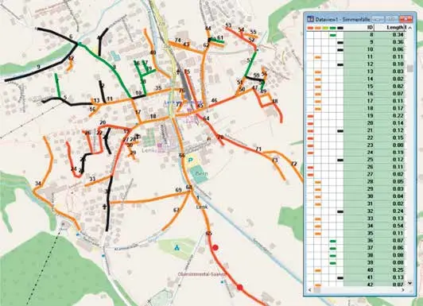
PublireportageDigitalRoad SA – Lire la route pour mieux la connaître
Company profile
Interview
Ziel sind langfristige Gebrauchswerte, das heisst Gebäude, die sich lange Zeit gut nutzen lassen sowie gut erneuert und umgebaut werden können
Interview mit Angelo Cioppi – Co-Vorsteher des Amts für Grundstücke und Gebäude / Kantonsbaumeister
Interview
Tiefbauamt des Kantons Bern: «Das Berner Modell findet auch ausserkantonal Nachahmer»
Interview mit Stefan Studer, Kantonsoberingenieur / Amtsvorsteher
Interview
Un patrimoine à entretenir et développer
Entretien avec Gian Carlo Chiovè, architecte cantonal et chef du service des bâtiments
Interview
Un canton de 450’000 habitants à l’horizon 2050
Tour d’horizon avec Giancarla Papi, cheffe du service des constructions et de l’aménagement
Interview
Mobilité, aménagement du territoire et stratégie énergétique 2050
Interview de Laurent Favre, conseiller d’État neuchâtelois
Dossier
Service des bâtiments – Voir loin et retrousser les manches
Yves-Olivier Joseph, architecte cantonal
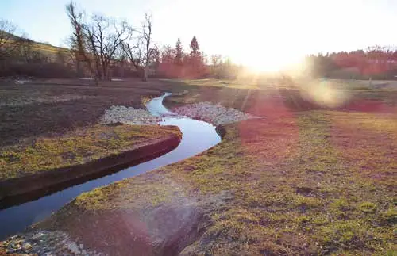
InterviewService des ponts et chaussées – Les grands projets cantonaux neuchâtelois
Entretien avec Nicolas Merlotti
Interview
Un territoire reconnu pour son bilinguisme, ses infrastructures et son excellence horlogère
Interview de Philippe Chételat, préfet de Bienne
Interview
Standortförderung Kanton Bern – Kanton Bern, ein innovativer, breit diversifizierter Standort
Interview mit Dr. Sebastian Friess, Leiter Standortförderung Kanton Bern
Interview
Stadt Biel – « Unsere Stadt befindet sich seit Jahren in einer sehr dynamischen Phase »
Interview mit Thomas Gfeller, Delegierter für Wirtschaft der Stadt Biel
Interview
Une ville incontournable
Entretien avec M. Grégoire Junod, syndic, en charge de la Culture et du Développement urbain
Interview
Investir pour faire du développement un atout
Entretien avec Mme Florence Germond, municipale en charge des Finances et de la Mobilité
Interview
« Une autre façon d'habiter est en marche ! »
Entretien avec Mme Natacha Litzistorf, municipale en charge du Logement, de l'Environnement et de l'Architecture
Interview
« Nous nous positionnons à la pointe d'une thématique vitale »
Entretien avec M. Pierre-Antoine Hildbrand, municipal en charge de l'Economie et de la Sécurité
Interview
Vers une vi(ll)e toujours plus verte
Entretien avec M. Jean-Yves Pidoux, municipal en charge des Services industriels
Interview
Chaque voix doit être impliquée
Entretien avec M. David Payot, municipal en charge de l'Enfance, de la Jeunesse et des Quartiers
Interview
Lausanne en forme olympique
Entretien avec M. Oscar Tosato, municipal en charge des Sports et de la Cohésion sociale
Publireportage
OFISA Informatique – Pour une stratégie centrée sur l'humain
 Interview
InterviewLes défis de l’économie vaudoise
Interview du conseiller d’État Philippe Leuba
Interview
« Il faut déployer davantage d’énergie pour obtenir des résultats »
Le service de la promotion économique et du commerce – Rencontre avec Lionel Eperon
 Interview
InterviewLa Caisse cantonale vaudoise de compensation AVS
Interview de Fabienne Goetzinger, Directrice de la Caisse cantonale vaudoise de compensation AVS/AI
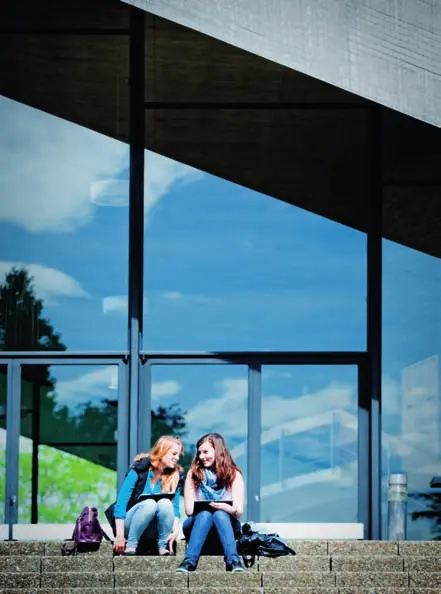
InterviewLa HEP Vaud, au cœur du tissu universitaire – Enseignant, un métier toujours plus recherché
Entretien avec son recteur, M. Guillaume Vanhulst (français et anglais)
Interview
Institut fédéral des hautes études en formation professionnelle IFFP – Des contacts étroits avec les partenaires de la formation professionnelle
Un entretien avec le Prof. Dr Alexandre Étienne, Directeur suppléant de l’IFFP, Directeur régional du site de Lausanne
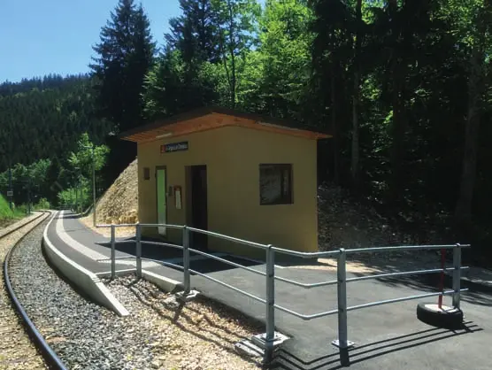
InterviewTransports publics de la région nyonnaise - TPN SA – Une offre de qualité pour voyager en toute liberté
Ein hochwertiges und flexibles Angebot (français et allemand)
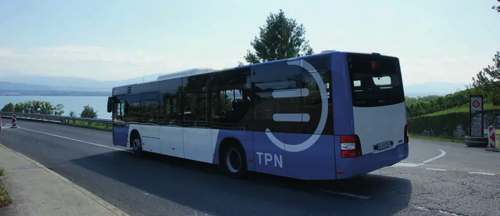
InterviewTPN – Transports publics de la région nyonnaise SA : accompagner l’essor d’une région
Entretien avec M. Richard Zaugg, directeur des TPN
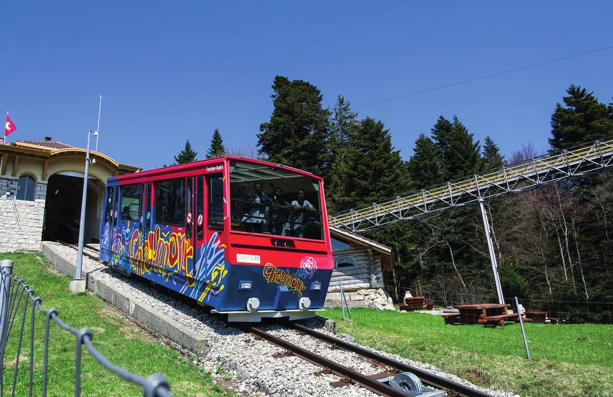
InterviewTransN, Transports Publics Neuchâtelois SA – Des sauts qualitatifs importants
Entretien avec M. Pascal Vuilleumier, directeur de transN
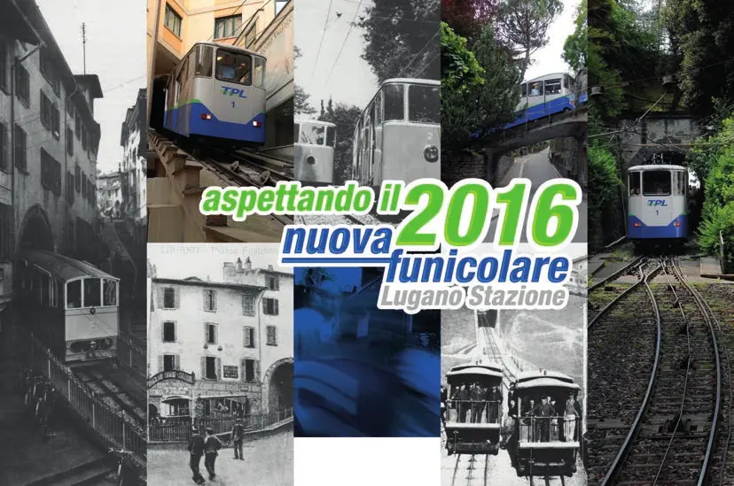
PublireportageTrasporti Pubblici Luganesi SA – Si alza il sipario sulla nuova funicolare
Le funiculaire Piazza Cioccaro – gare CFF de Lugano
Interview
L'apiah au cœur du monde horloger – Une association patronale très active
Entretien avec Marie-Thérèse Kohler Fiorellino, Secrétaire générale
 Interview
InterviewStadt Solothurn – « Solothurn schaut auf eine äusserst erfreuliche Dekade zurück »
Interview mit Nationalrat Kurt Fluri, Präsident Schweizerischer Städteverband SSV
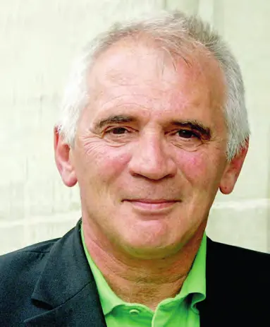
InterviewUn nouvel âge d'or pour la Ville
Entretien avec M. Pierre-Alain Clément, syndic de Fribourg
Interview
Accompagner la croissance démographique de Bulle
Interview d'Yves Menoud, syndic de la Ville de Bulle
Interview
Densifier la ville en lui conservant sa qualité de vie
Entretien avec M. Jean Bourgknecht, conseiller communal en charge de l'urbanisme et du génie civil
Interview
Améliorer la mobilité, un enjeu majeur pour Fribourg
Entretien avec M. Thierry Steiert, conseiller communal en charge de la Police locale, de la Mobilité, des Sports et des Services industriels
Interview
Des finances qui se portent bien
Entretien avec Mme Madeleine Genoud-Page, conseillère communale en charge des finances et de la culture
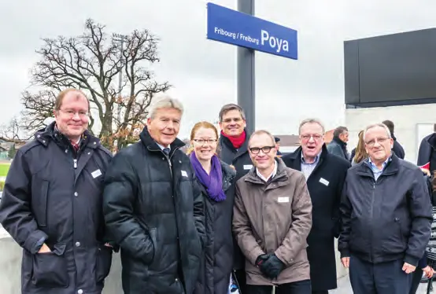
InterviewL'Agglomération de Fribourg, une plus-value en matière d'aménagement régional et de mobilité
Interview de Corinne Margalhan-Ferrat, directrice de l'Agglomération de Fribourg
Interview
L'école au diapason du développement démographique
Entretien avec Mme Antoinette de Weck, conseillère communale en charge des écoles et de l'action sociale
Interview
Stadt Bern – Interview mit Stadtpräsident Alexander Tschäppät
« Bern erbringt als Hauptstadt sozusagen einen Service public für die ganze Schweiz »
Interview
Bienne en trois points forts
Interview du maire Erich Fehr
Interview
Kanton Bern – Interview mit Volkswirtschaftsdirektor Andreas Rickenbacher
« Punkto Innovation gehören unsere Unternehmen zur Weltspitze »
Interview
Des projets ambitieux pour une meilleure qualité de vie
Interview de Barbara Schwickert, directrice des travaux publics, de l'énergie et de l'environnement de la Ville de Bienne
Interview
Miser sur des pôles de développement stratégiques
Interview de François Kuonen, directeur du département de l'urbanisme de la Ville de Bienne
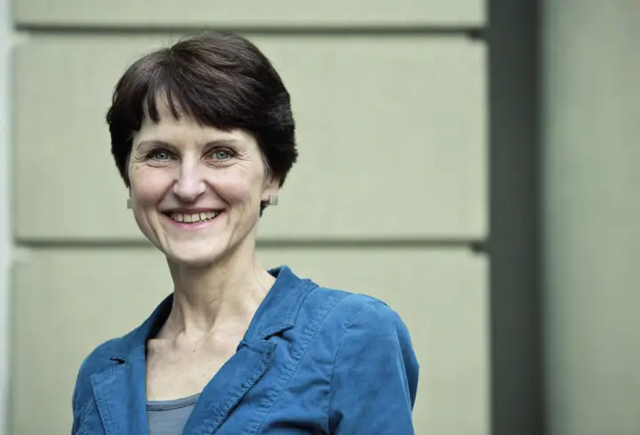
InterviewDirektion für Bildung, Soziales und Sport der Stadt Bern – Interview mit Franziska Teuscher
« Wir sind nahe bei den Freuden und Sorgen der Stadtberner Bevölkerung »
Interview
Une filière bilingue unique en Suisse
Interview de Cédric Némitz, directeur de la formation, de la culture et du sport de la Ville de Bienne
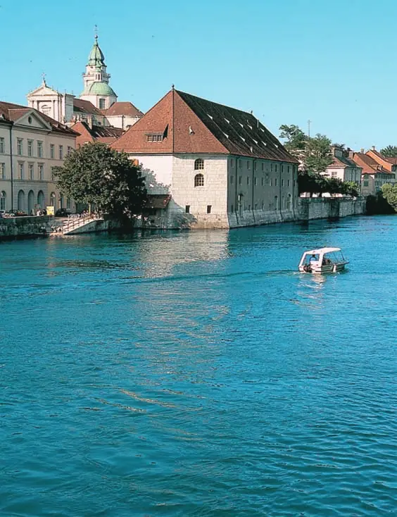
InterviewStadt Solothurn – « Solothurn schaut auf eine äusserst erfreuliche Dekade zurück »
Interview mit Nationalrat Kurt Fluri, Stadtpräsident von Solothurn und Präsident des Schweizerischen Städteverbands
Interview
Canton de Genève – Corriger le mal-développement de Genève
Interview d'Antonio Hodgers, conseiller d'Etat chargé du DALE
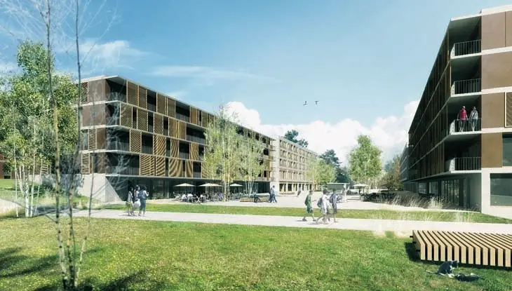
InterviewMeyrin – Développer en restant maîtres
Interview de M. Jean-Marc Devaud, conseiller administratif et maire de la Ville de Meyrin
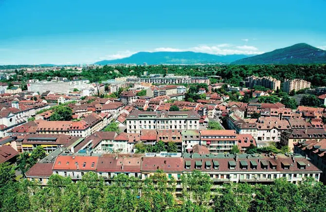
InterviewCarouge – Une qualité de vie à préserver
Interview de Nicolas Walder, conseiller administratif de la Ville de Carouge
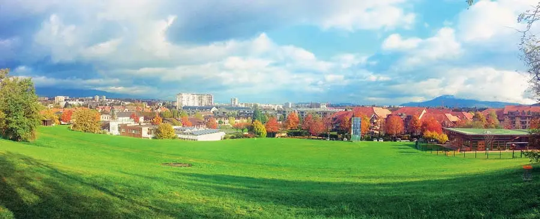
InterviewPlan-les-Ouates – Commune aux mille visages
Interview de Mme Fabienne Monbaron, conseillère administrative de la ville de Plan-les-Ouates
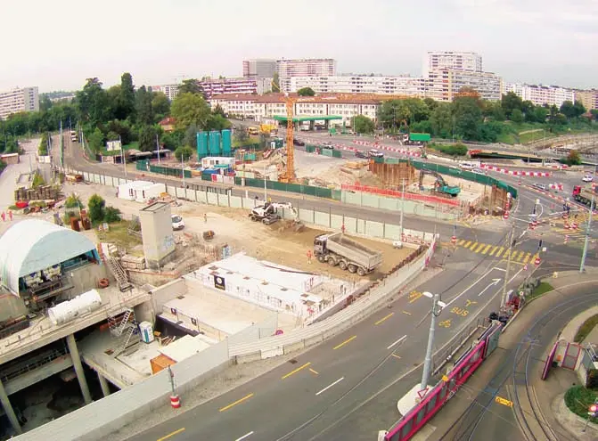
InterviewLancy – Partenaire du développement du canton
Interview de M. François Lance, conseiller administratif de la Ville de Lancy
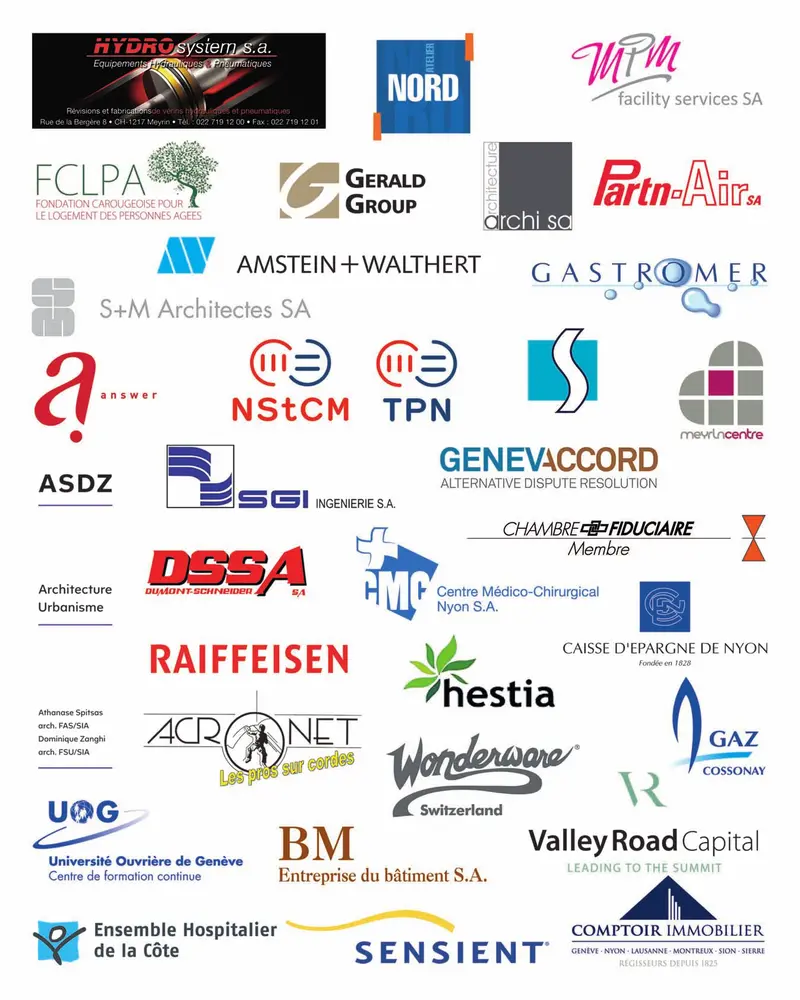
PublireportageCarouge – Vieillir dans les meilleures conditions
Résidence Carouge-Centre et Résidence Les Pervenches
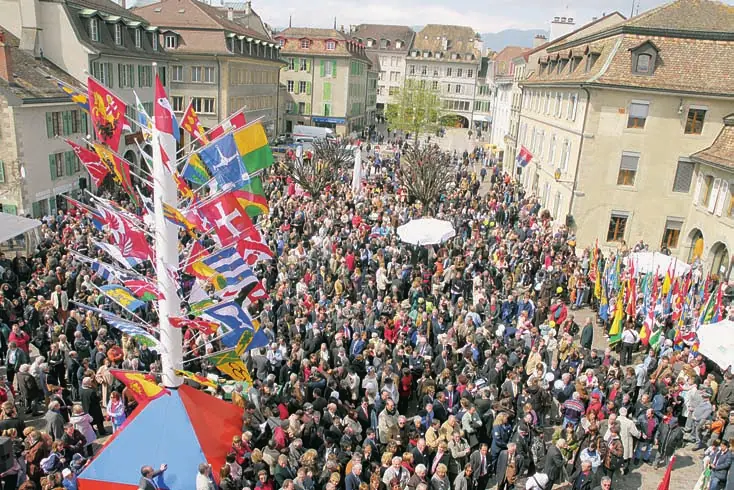
InterviewDistrict de Nyon, entre ceps et sapins
Le regard aiguisé du préfet Jean-Pierre Deriaz
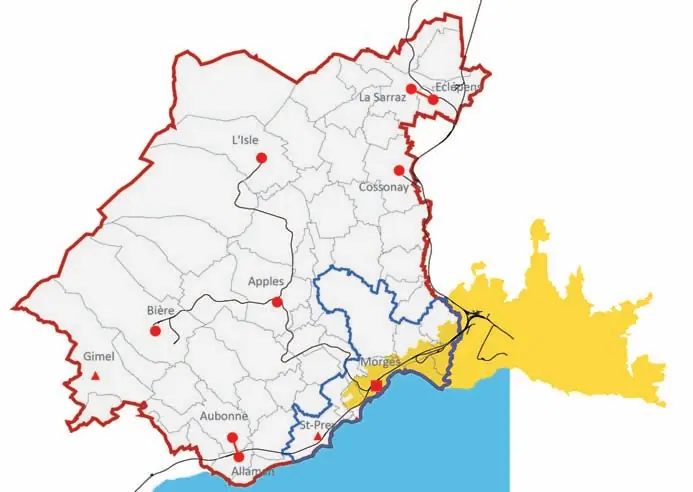
InterviewL'ARCAM, un outil de développement régional
Entretien avec son président Georges Rime
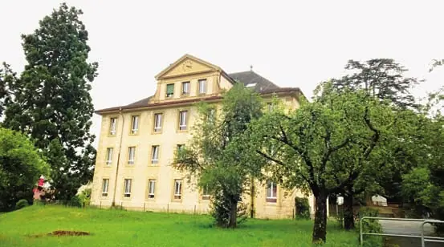
InterviewCossonay, le charme discret du Pied du Jura vaudois
Le syndic veut un développement raisonnable et maîtrisé
Dossier
Comment l'ARCAM prend l'avenir en mains – Des objectifs et des projets
Entretien avec M. Oscar Cherbuin, directeur de l'ARCAM
Interview
Nyon – Une ville qui a trouvé sa place
Entretien avec M. Daniel Rossellat, syndic
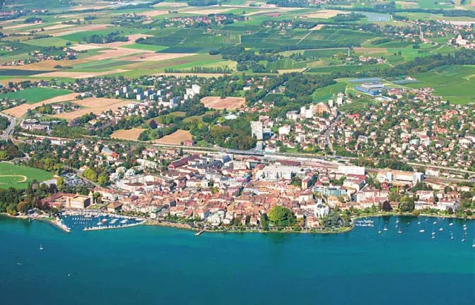
InterviewMorges est une ville heureuse
Interview de Vincent Jaques, syndic de Morges
Interview
Conseil régional de Nyon – Pour une vie propre entre Genève et Lausanne
Interview de Gérald Cretegny, président du comité de direction de Régionyon
 Interview
InterviewGland, un village devenu ville
Interview du syndic Gérald Cretegny
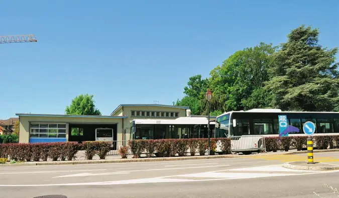
InterviewAubonne, une commune à deux pôles
Interview du syndic Luc-Etienne Rossier
Interview
Morges – Introduire la nature en ville
Interview de Jean-Jacques Aubert, municipal en charge des infrastructures, des énergies et des espaces publics
Interview
Aubonne – Développer notre offre de tourisme vert
Interview de Gisèle Burnet, municipale (instruction publique, affaires sociales, petite enfance, culture et tourisme)
Interview
Nyon – Maîtriser le développement urbanistique de la Ville
Entretien avec Mme Fabienne Freymond Cantone, municipale en charge de l'urbanisme et des ressources humaines
InterviewGland – Préparer l'arrivée de nouveaux habitants
Interview de Thierry Genoud, municipal en charge des bâtiments et de l'urbanisme
Interview
Nyon – Equipements : un retard à rattraper
Entretien avec M. Claude Uldry, conseiller municipal en charge des bâtiments, des finances, de l'informatique et de la population
Interview
Nyon – Trois piliers pour soutenir la Culture
Entretien avec Olivier Mayor, conseiller municipal en charge de la culture, des travaux et de l'environnement
Interview
Aubonne – Favoriser les démarches proactives
Interview de Jean-Christophe de Mestral, municipal (finances, mobilité, transports publics, sécurité)
Interview
Cossonay – Un nouveau réseau de communes pour une abondance d'eau potable
Interview de Claude Moinat, municipal (eaux et épuration, services industriels, routes, finances)
Interview
Aubonne – Aider les jeunes à prendre leur place dans la société
Interview d'Eric Muller, municipal (domaines, parcs, voirie, déchets, jeunesse, service du feu)
Interview
Morges – Priorité à la densification et la qualité urbaine
Interview d'Yves Paccaud, municipal en charge de l'aménagement du territoire et du développement durable
InterviewGland – Priorité à l'ordre public et à la sécurité des personnes
Interview de Michael Rohrer, municipal (sécurité publique, population, transports publics)
Interview
Nyon – Préparer la mobilité de demain
Entretien avec Mme Elisabeth Ruey-Ray, conseillère municipale en charge de la mobilité, des transports et de la sécurité publique
Interview
Morges – Pour une fiscalité des entreprises stable
Interview d'Eric Züger, municipal en charge des finances et de la promotion économique
Interview
Cossonay – Un grand dynamisme social et culturel
Interview de Nicole Baudet, vice-présidente de la Municipalité (bâtiments, constructions, affaires sociales, santé, culture)
InterviewGland – Une région dynamique et attractive pour les entreprises
Interview de Daniel Collaud, municipal (finances, promotion économique, sports, santé, domaines et forêts)
Interview
Nyon – Des espaces verts, gages de qualité de vie
Entretien avec M. Claude Dupertuis, conseiller municipal en charge des espaces verts, forêts et services industriels
Interview
Cossonay – Un emplacement géographique très favorable
Interview de Bernard Ebener, municipal (parcs, environnement et développement durable, informatique, sport, forêts, défense incendie)
InterviewRéaménager le Vieux-Bourg de Gland
Interview d'Olivier Fargeon, municipal en charge des équipements, espaces verts et gestion des déchets
InterviewGland – Offrir aux jeunes des lieux de rencontre
Interview de Christine Girod, municipale en charge de l'accueil de l'enfance, de la jeunesse et des écoles
Interview
Cossonay – Un centre entièrement dédié à l'enfance
Interview de Valérie Induni, municipale (protection civile, cultes, écoles et petite enfance)
InterviewGland – Priorité au logement accessible de qualité
Interview d'Isabelle Monney, municipale en charge des affaires sociales, du logement, de la culture et des cultes
Interview
L'apiah au cœur du monde horloger – Une association patronale très active
Entretien avec Marie-Thérèse Kohler Fiorellino, Secrétaire générale
Éditorial
Il Ticino è in salute – Il nodo non è quanto si spende ma come si spende...
di Paolo Beltraminelli, Consigliere di Stato, direttore Dipartimento della sanità e della socialità
Interview
Bundesamt für Gesundheit – Interview mit Direktor Pascal Strupler
Dossier
Staatssekretariat für Bildung, Forschung und Innovation SBFI
 Interview
InterviewL'EMS, un élément incontournable du réseau de santé
Interview de Pierre Rochat, Président de l'ARODEMS, Directeur de la Fondation Beau-Site
Publireportage
Cité générations – Une maison de santé pluridisciplinaire
 Interview
InterviewFondation Beau-Site – Accompagner la personne âgée en continuum
Interview de Pierre Rochat, Directeur de la Fondation Beau-Site
 Interview
InterviewL'Ensemble Hospitalier de la Côte – Un réseau de soins intégrés avant l'heure
Entretien avec le Directeur général de l'EHC, M. François Jacot-Descombes
 Interview
InterviewSpitex Zürich Limmat – Im Gespräch mit CEO Christina Brunnschweiler
 Interview
InterviewStadt Solothurn – Interview mit Nationalrat Kurt Fluri
Le président de la ville de Soleure et de l'Union des villes suisses
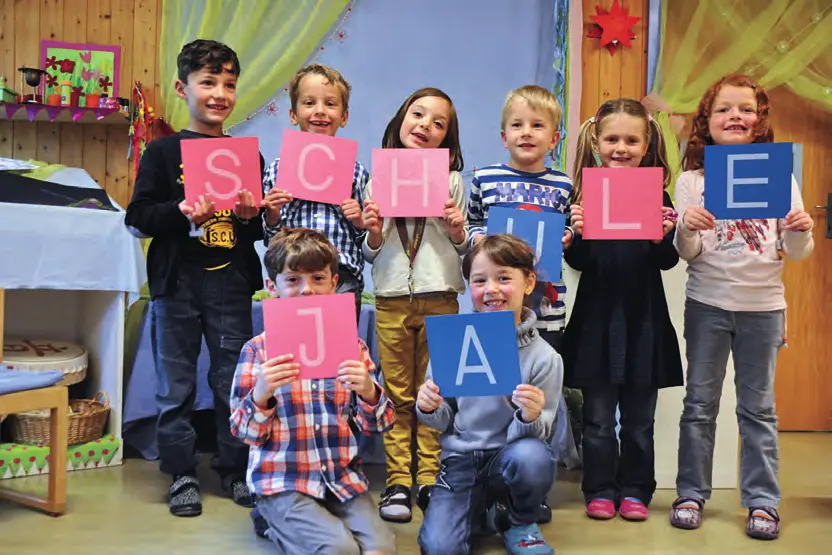
InterviewSchuldirektion der Stadt Solothurn – Interview mit Irène Schori, Schuldirektorin
Les écoles de la ville de Soleure
Interview
Stadt Solothurn – Interview mit der Leiterin des Stadtbauamtes, Andrea Lenggenhager
Culture du bâti et développement urbain
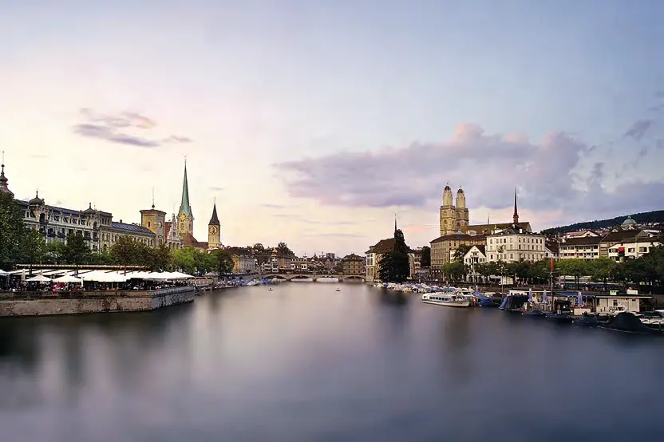
InterviewStadt Zürich – Interview mit Stadtpräsidentin Corine Mauch
Une ville de plus de 400 000 habitants
Interview
Stadt Zürich – Amt für Städtebau: Im Gespräch mit Patrick Gmür, Direktor
Densifier en partant de l'histoire de la ville
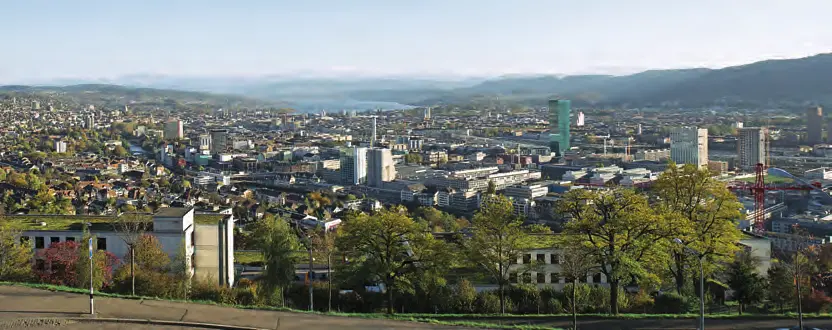
InterviewStadtentwicklung Stadt Zürich – Interview mit Benno Seiler
La promotion économique de la ville de Zurich
Interview
Stadt Winterthur – Interview mit Michael Künzle, Stadtpräsident
750 ans de droit de cité
Interview
Stadt Winterthur, Departement Bau – Im Gespräch mit Michael Hauser
Le chef de l'office de l'urbanisme de Winterthour
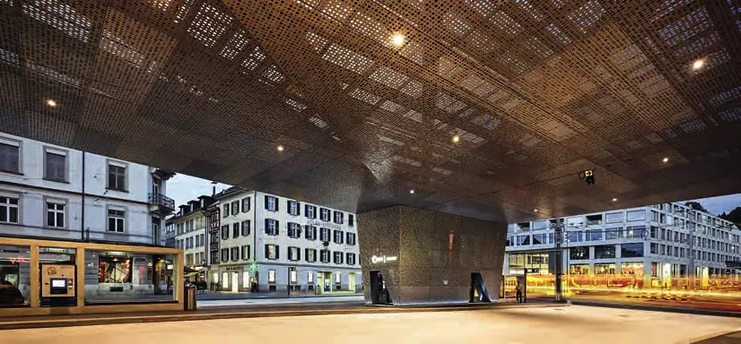
InterviewStadt Winterthur, Departement Kulturelles und Dienste – Interview mit Mark Würth
Le responsable du développement urbain
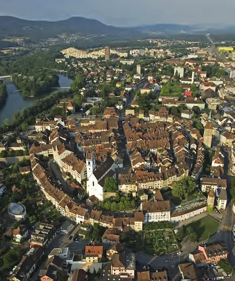
InterviewStadt Aarau – Im Gespräch mit Stadtpräsidentin Jolanda Urech
Prix Wakker 2014
Interview
Wirtschaftsfachstelle der Stadt Aarau – Interview mit Andreas Burri
Promotion économique de la ville d'Aarau
Interview
Schule Aarau – Interview mit Remi Bürgi, Geschäftsleiter
Le modèle de l'école intégrative
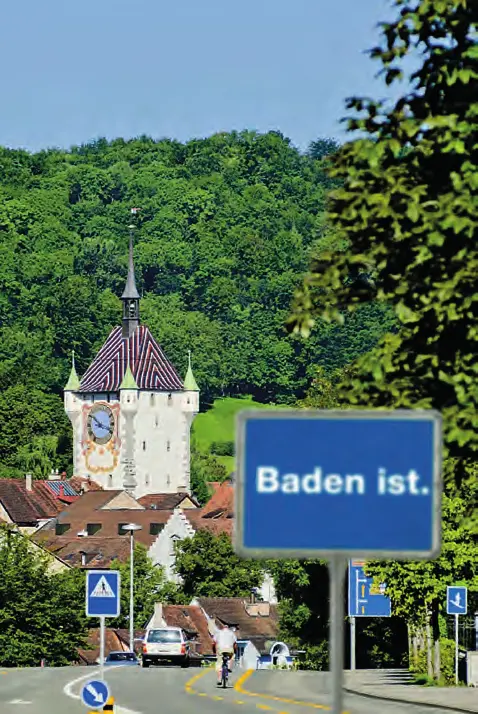
InterviewStadt Baden – Im Gespräch mit Thomas Lütolf, Leiter Standortmarketing
« Baden ist. »
Interview
Stadt Baden – Interview mit Stadträtin Ruth Müri, Vorsteherin Ressort Bildung
Baden, ville de formation
 Interview
InterviewRegio Energie Solothurn – Interview mit Felix Strässle, Direktor
« Energieservice public – so nah, so gut »
 Interview
InterviewAmt für Kultur und Sport des Kantons Solothurn – Interview mit Cäsar Eberlin, Amtsleiter
Patrimoine, encouragement culturel et sport
 Interview
InterviewStadt Solothurn – Interview mit Nationalrat Kurt Fluri
Le président de l'Union des villes suisses
Portrait
Sion, une petite capitale devenue un vrai centre urbain
Un développement ambitieux et harmonieux – Marcel Maurer, président de la Ville de Sion
Interview
Renforcer la mobilité douce et les transports publics
Interview de Georges Joliat, chef du service des travaux publics de la Ville de Sion
Interview
Le sport pour tous !
Interview de Blaise Crittin, chef du service des sports de la Ville de Sion
Interview
Du dynamisme de la vie culturelle sédunoise
Interview de Gaëlle Métrailler, déléguée culturelle de la Ville de Sion
Interview
Cultiver le vivre ensemble et le respect
Interview de Vincent Pellissier, conseiller municipal de Sion en charge de l'instruction publique
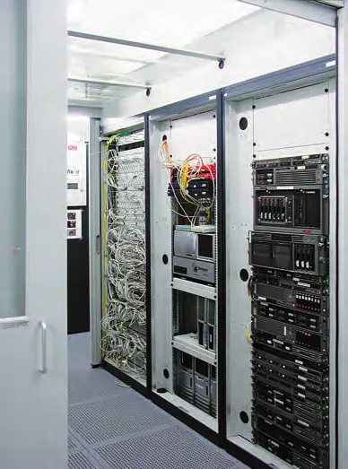
PublireportageCIGES SA – Le spécialiste de l'informatique centralisée
Centre informatique de gestion à Sion
Interview
Martigny, un état d'esprit
Marc-Henri Favre, dynamique président de la Ville
Dossier
Martigny, un modèle d'intégration scolaire
« Apprendre tous ensemble en respectant chacun » – Anne-Laure Couchepin Vouilloz
Dossier
La sécurité civile exige une organisation sans faille
Martigny assume son rôle de chef-lieu – Serge Fellay
Dossier
Martigny à l'horizon 2030
Un développement assumé et maîtrisé – Florence Kuonen
Dossier
La Place Centrale de Martigny – À la hauteur de son histoire
David Martinetti, conseiller municipal en charge des Travaux & Bâtiments publics
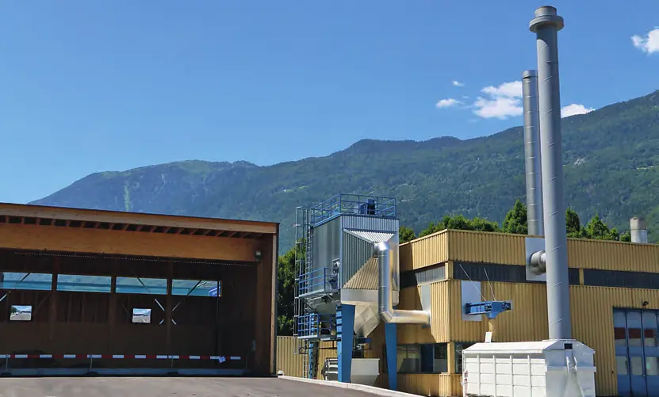
PublireportageSinergy, partenaire de proximité
Électricité, eau, chauffage, TV numérique, Internet et téléphone – Patrick Pralong, directeur
Dossier
Martigny, énergétiquement exemplaire
Une politique cohérente à long terme – René Quiros
Portrait
Sierre relève les défis du 21e siècle
Le plus important campus étudiant du Valais – François Genoud, président de la Ville
Interview
Favoriser les transports publics et la mobilité douce
Interview de Pierre Kenzelmann, conseiller municipal de Sierre en charge des travaux publics
Interview
Développer des collaborations à l'échelle régionale
Interview de Laetitia Massy, conseillère municipale de Sierre en charge de l'enseignement et des actions sociales
Interview
Le pragmatisme au service de l'environnement
Interview de Mario Rossi, conseiller municipal de Sierre en charge de l'environnement, de l'eau et de l'énergie
Interview
Un centre-ville fort et des quartiers dynamiques
Interview de Jean-Paul Salamin, conseiller municipal de Sierre en charge de l'aménagement du territoire
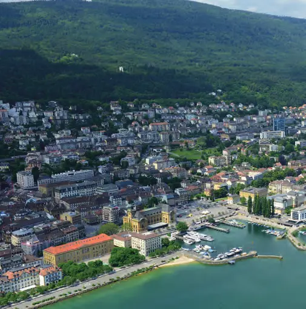
Interview« Neuchâtel, art de vivre et innovation »
Olivier Arni, président de la Ville, décline la nouvelle devise en axes stratégiques
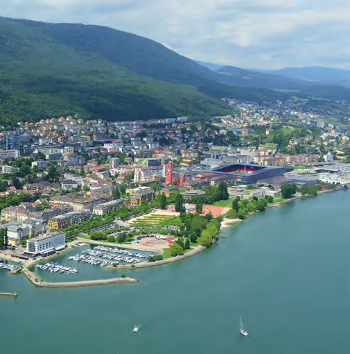
InterviewUrbanisme, Économie, Environnement – Des logements et des projets d'urbanisme
Olivier Arni, directeur de l'Urbanisme, de l'Économie et de l'Environnement
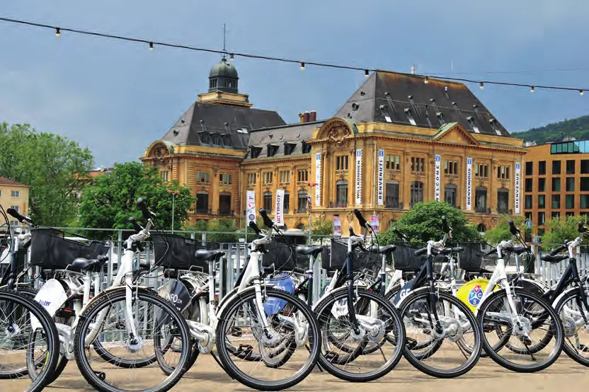
InterviewÉducation, Santé et Mobilité – Christine Gaillard, une volonté politique affirmée
La conseillère communale de Neuchâtel
Interview
Politique d'agglomération – « Nous savons où nous allons et ce que nous voulons »
Pascal Sandoz, conseiller communal de Neuchâtel
Interview
Culture, Sports et Tourisme – Un espace de congrès en perspective
Thomas Facchinetti, conseiller communal de Neuchâtel
 Interview
Interviewarcjurassien.ch – Au centre du dialogue et des projets
Interview de Madame Mireille Gasser, secrétaire générale d'arcjurassien.ch
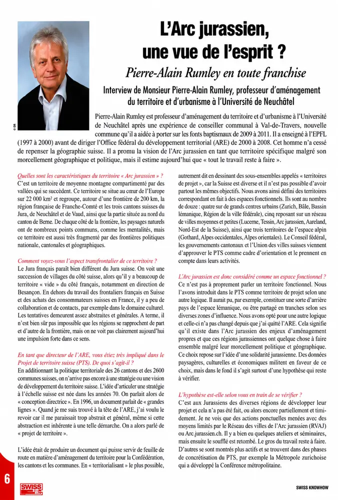
InterviewL'Arc jurassien, une vue de l'esprit ?
Pierre-Alain Rumley en toute franchise – Interview du professeur d'aménagement du territoire et d'urbanisme à l'Université de Neuchâtel
 Interview
Interview« Les différences sont moins importantes que les ressemblances »
Interview de Monsieur Pascal Broulis, président volontariste d'arcjurassien.ch
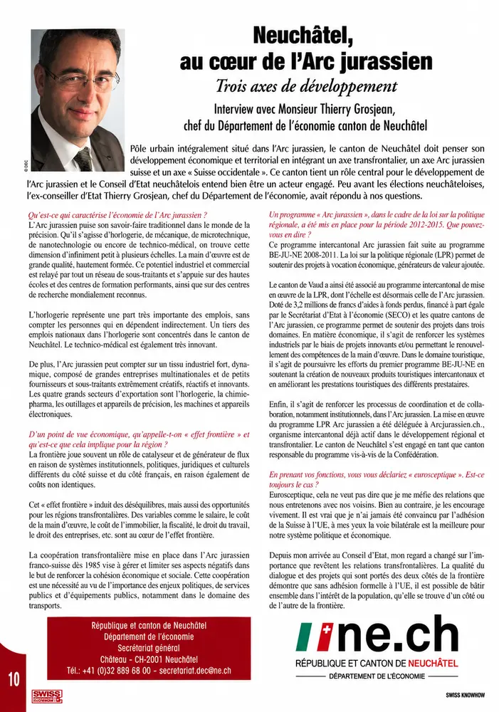
InterviewNeuchâtel, au cœur de l'Arc jurassien – Trois axes de développement
Interview avec Monsieur Thierry Grosjean, chef du Département de l'économie canton de Neuchâtel
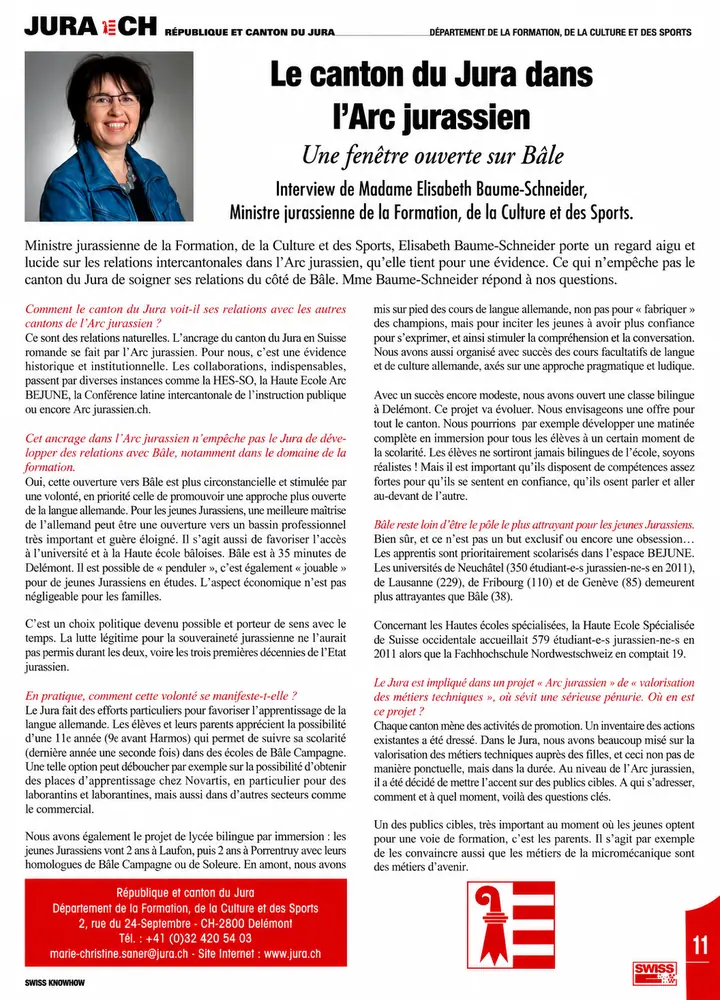
InterviewLe canton du Jura dans l'Arc jurassien – Une fenêtre ouverte sur Bâle
Interview de Madame Elisabeth Baume-Schneider, Ministre jurassienne de la Formation, de la Culture et des Sports
 Interview
InterviewLe canton de Berne, acteur à part entière – « Ce n'est pas la surface qui compte »
Interview avec Monsieur Philippe Perrenoud, conseiller d'État bernois francophone
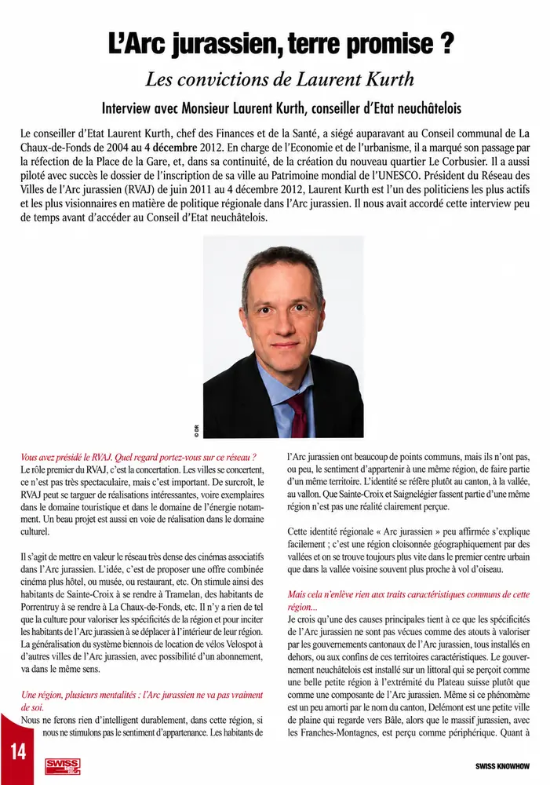
InterviewL'Arc jurassien, terre promise ?
Les convictions de Laurent Kurth – Interview avec Monsieur Laurent Kurth, conseiller d'État neuchâtelois
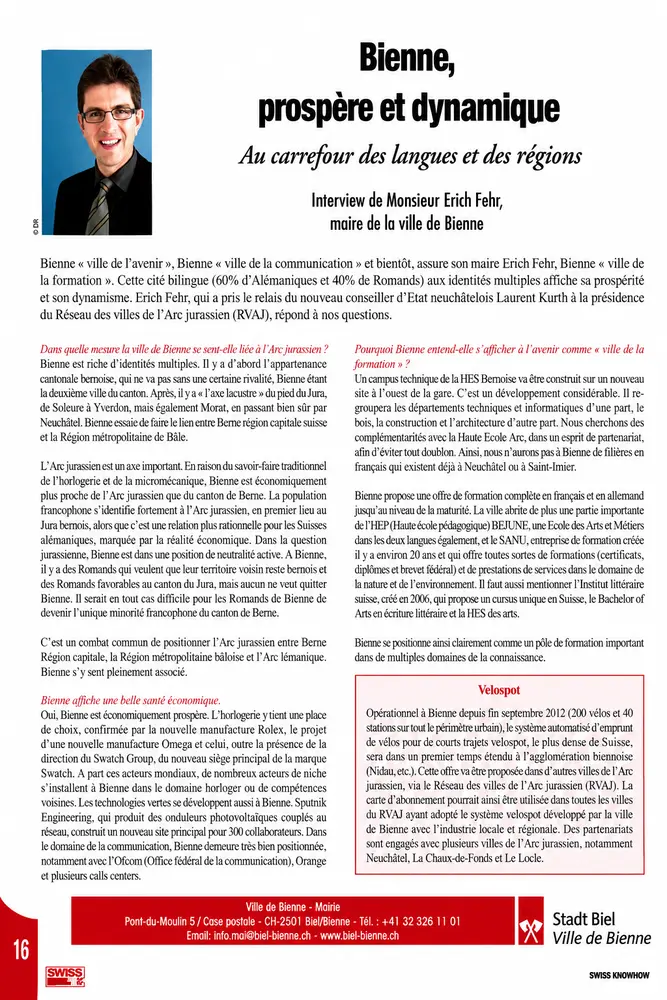
InterviewBienne, prospère et dynamique – Au carrefour des langues et des régions
Interview de Monsieur Erich Fehr, maire de la ville de Bienne
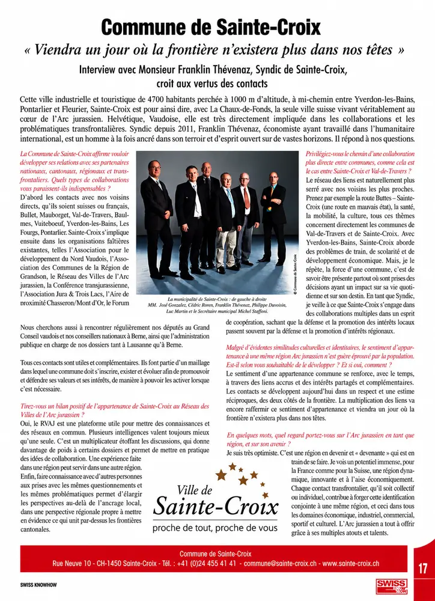
Interview« Viendra un jour où la frontière n'existera plus dans nos têtes »
Commune de Sainte-Croix – Interview avec Monsieur Franklin Thévenaz, Syndic de Sainte-Croix
 Interview
InterviewVers une société à 2000 watts – Un projet des villes pour l'Arc jurassien
Interview de Monsieur Pierre Brulhart, conseiller communal à Delémont (directeur du Département de l'énergie et des eaux)
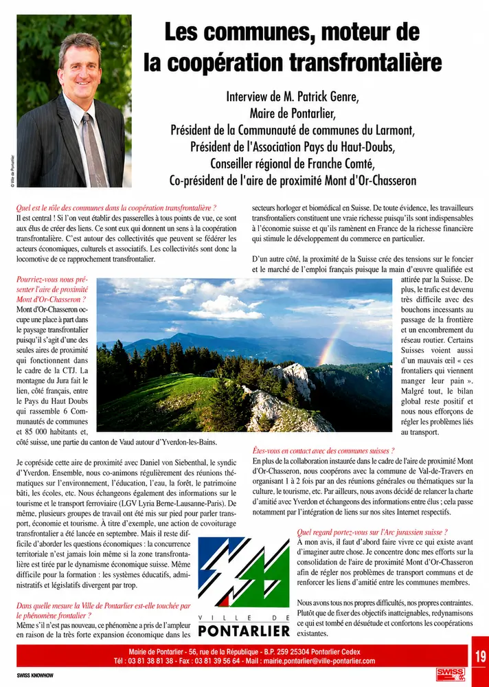
InterviewLes communes, moteur de la coopération transfrontalière
Interview de M. Patrick Genre, Maire de Pontarlier
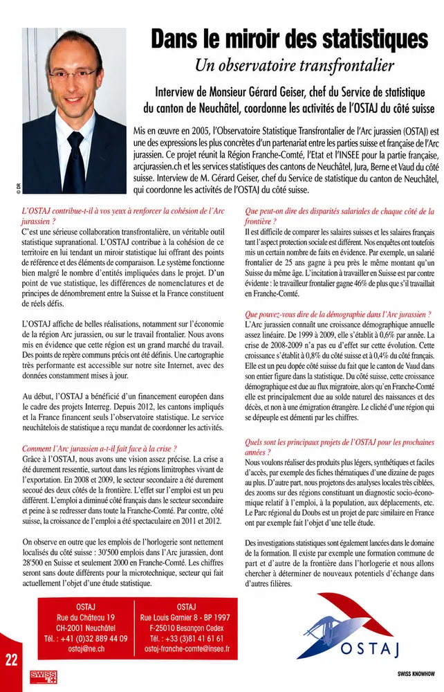
InterviewDans le miroir des statistiques – Un observatoire transfrontalier
Interview de Monsieur Gérard Geiser, chef du Service de statistique du canton de Neuchâtel, qui coordonne les activités de l'OSTAJ du côté suisse
 Interview
InterviewUn parc transfrontalier pour une communauté de destin
Interview de Mme Anne Girardet, Chargée de mission transfrontalière pour le Pays Horloger et le Parc naturel régional du Doubs
Interview
Atelier für Direkte Demokratie St Ursanne – «Der Jura – eine geniale Region!»
Interview mit Andreas Gross, Leiter des Ateliers für Direkte Demokratie / « Le Jura : une région qui a du génie ! »
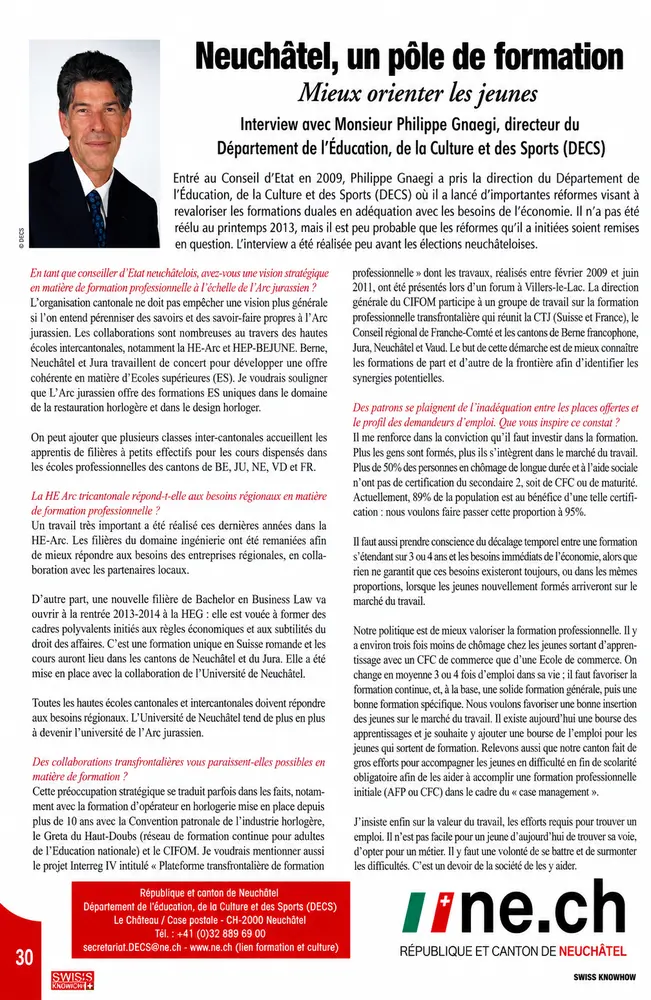
InterviewNeuchâtel, un pôle de formation – Mieux orienter les jeunes
Interview avec Monsieur Philippe Gnaegi, directeur du Département de l'Éducation, de la Culture et des Sports (DECS)
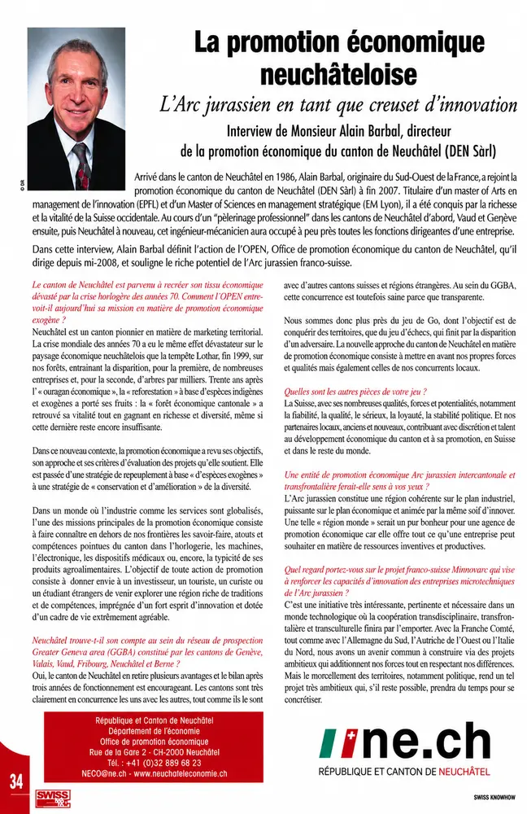
InterviewLa promotion économique neuchâteloise – L'Arc jurassien en tant que creuset d'innovation
Interview de Monsieur Alain Barbal, directeur de la promotion économique du canton de Neuchâtel (DEN Sàrl)
Interview
Stadt Bern – «Politik ist die Kunst, zur richtigen Zeit die richtigen Rahmenbedingungen zu setzen»
Interview mit Alexander Tschäppät, Stadtpräsident von Bern / « La politique est l'art de réunir les bonnes conditions au moment idoine »
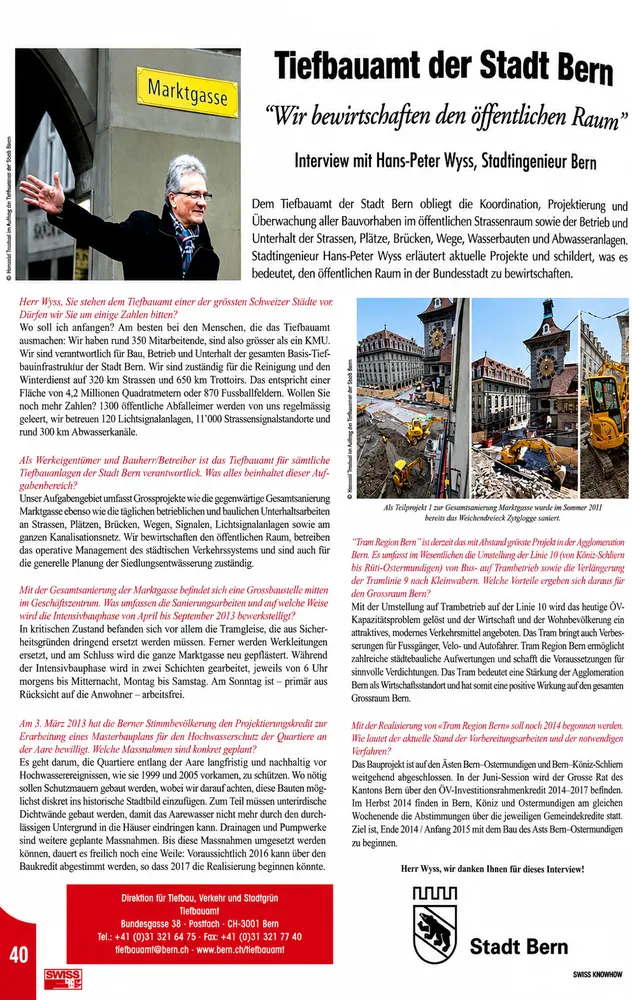
InterviewTiefbauamt der Stadt Bern – «Wir bewirtschaften den öffentlichen Raum»
Interview mit Hans-Peter Wyss, Stadtingenieur Bern / Office des ponts et chaussées de la ville de Berne – « Nous gérons l'espace public »
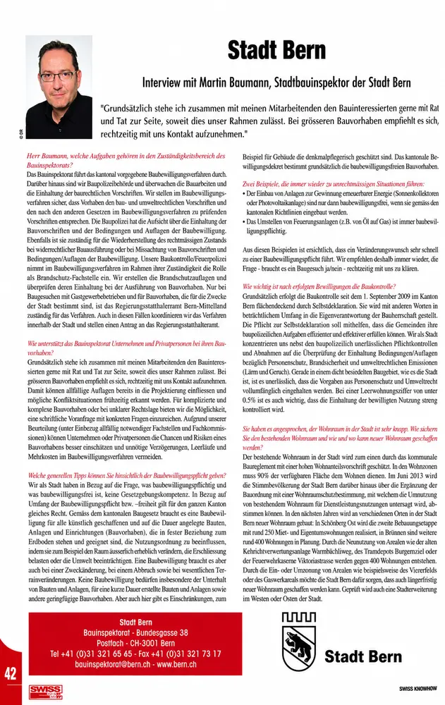
InterviewStadt Bern – Interview mit Martin Baumann, Stadtbauinspektor der Stadt Bern
Bauinspektorat: Baubewilligungen, Baupolizei und Wohnraumschutz
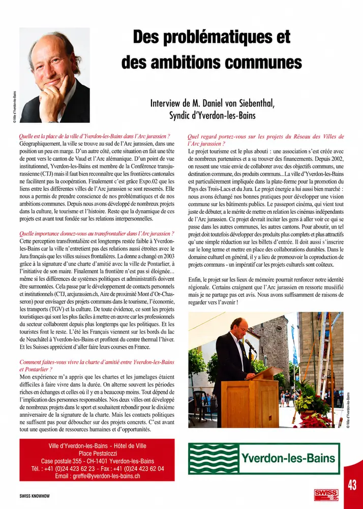
InterviewDes problématiques et des ambitions communes
Interview de M. Daniel von Siebenthal, Syndic d'Yverdon-les-Bains
Interview
Wirtschaftsraum Bern – «Beispielhaftes Zusammenwirken von Stadt und Land»
Interview mit Hans-Jürg Gerber, Leiter Wirtschaftsraum Bern / « Une synergie exemplaire entre ruralité et urbanité »
Interview
Stadt Biel
Interview mit Thomas Gfeller, Delegierter für Wirtschaft Stadt Biel
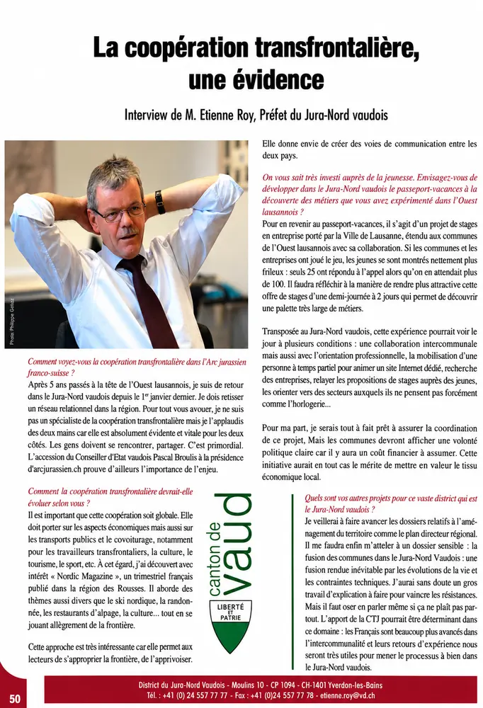
InterviewLa coopération transfrontalière, une évidence
Interview de M. Etienne Roy, Préfet du Jura-Nord vaudois
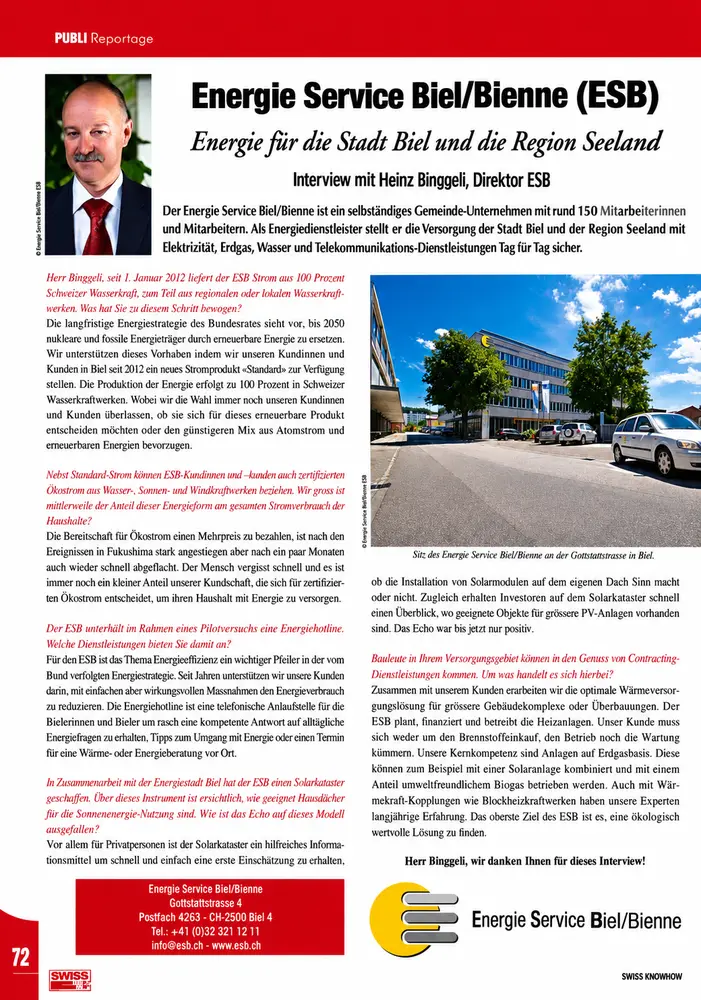
PublireportageEnergie Service Biel/Bienne (ESB) – Energie für die Stadt Biel und die Region Seeland
Interview mit Heinz Binggeli, Direktor ESB / De l'énergie pour la ville de Bienne et la région du Seeland
 Publireportage
PublireportageFondation Bartimée
Traitement, réinsertion sociale et professionnelle des personnes dépendantes
Interview
Stadt Zürich
Interview mit Corine Mauch, Stadtpräsidentin von Zürich
Interview
Volkswirtschaftsdirektion des Kantons Zürich – «Ideale Rahmenbedingungen für erfolgreiches und gesundes Wachstum schaffen»
Interview mit Regierungsrat Ernst Stocker
Éditorial
Un Ticino propizio per l'economia
Laura Sadis, Consigliera di Stato e Direttrice del Dipartimento delle finanze e dell'economia (version anglaise incluse)
Éditorial
Un sostegno concreto alle aziende
Stefano Rizzi, Direttore della Divisione dell'economia (version anglaise incluse)
 Publireportage
PublireportageOSC – Organizzazione sociopsichiatrica cantonale: disagio psichico, una rete territoriale efficace
Michele Salvini, direttore (version anglaise incluse)
 Interview
InterviewLes HUG à l'horizon 2015
Entretien avec M. Bernard Gruson, directeur général (version anglaise : The HUG by 2015)
InterviewAu cœur de la Genève internationale
Les HUG s'impliquent dans des projets humanitaires – avec le professeur Louis Loutan (version anglaise incluse)
InterviewSur le front de la médecine de premier recours
Les HUG assument leur rôle social en toute transparence – avec le professeur Jean-Michel Gaspoz (version anglaise incluse)
PublireportageLa Croix-Rouge genevoise, au service de la population
Entretien avec Mme Eliane Babel-Guérin, directrice
Entreprises
Administration communale d'Aubonne
Commune
Administration communale de Préverenges
Commune
Administration communale de Saint-Prex
Commune
Agglomération de Fribourg
Collectivité régionale (aménagement et mobilité)
Amt für Grundstücke und Gebäude (AGG) des Kantons Bern
Administration cantonale – immeubles et constructions
Amt für Kultur und Sport des Kantons Solothurn (AKS)
Administration cantonale de la culture et du sport
apiah – Association patronale des industries de l'Arc horloger
Association patronale
ARCAM – Association de la région Cossonay-Aubonne-Morges
Association de développement régional
arcjurassien.ch
Association intercantonale de développement régional
ARODEMS – Association romande et tessinoise des directeurs d'établissements médico-sociaux
Association professionnelle des directeurs d'EMS
Association Ecoparc
Association – développement durable
Atelier für Direkte Demokratie / Atelier pour la démocratie directe
Atelier de réflexion et maison d'édition (démocratie directe)
Bundesamt für Gesundheit (BAG)
Administration fédérale de la santé publique
Caisse cantonale vaudoise de compensation AVS (CCVD)
Assurances sociales – institution de droit public
Canton de Berne – Délégation du Conseil-exécutif pour les affaires jurassiennes, Chancellerie d'État
Administration cantonale
Canton de Vaud – Département des Finances et des Relations extérieures, Office des Affaires extérieures
Administration cantonale – relations extérieures
CIGES SA (Centre Informatique de Gestion)
Informatique centralisée pour collectivités
Cité générations – maison de santé
Centre médical pluridisciplinaire
Commune de Cossonay
Commune
Commune de Neyruz
Commune
Commune de Plan-les-Ouates
Commune
Commune de Sainte-Croix
Commune

Convention patronale de l'industrie horlogère suisse (CPIH)
Organisation patronale et partenaire social
CREM (Centre de recherches énergétiques et municipales)
Recherche appliquée en énergie urbaine

Croix-Rouge genevoise
Association humanitaire et sociale
Département de l'aménagement, du logement et de l'énergie (DALE) – Canton de Genève
Administration cantonale
Département de l’économie et du sport – État de Vaud
Administration cantonale – économie et sport
Département du développement territorial et de l’environnement – République et Canton de Neuchâtel
Administration cantonale – territoire, mobilité et énergie
Département du territoire et de l’environnement (DTE) – État de Vaud
Administration cantonale – territoire, environnement et énergie
DigitalRoad SA
Diagnostic numérique des réseaux routiers
Dipartimento della sanità e della socialità (Canton Ticino)
Administration cantonale de la santé et des affaires sociales
Direction de l’énergie – Canton de Vaud
Administration cantonale – énergie
Direction générale de la mobilité et des routes (DGMR) – État de Vaud
Administration cantonale – mobilité et routes
District du Jura-Nord vaudois (Préfecture)
Administration publique – préfecture
Energie Service Biel/Bienne (ESB)
Services industriels – électricité, gaz, eau, télécommunications

Ensemble Hospitalier de la Côte (EHC)
Hôpitaux et EMS
Fédération de l'industrie horlogère suisse FH
Association faîtière de l'industrie horlogère

Fondation Bartimée
Institution de traitement et de réinsertion des personnes dépendantes
Fondation Beau-Site
Établissements médico-sociaux
Groupe E
Entreprise générale de l’énergie
Haute Ecole Pédagogique Vaud (HEP Vaud)
Formation des enseignants

HFR – Hôpital fribourgeois / freiburger spital
Hôpital public cantonal
Hôpitaux universitaires de Genève – HUG
Hôpital universitaire
IDIAP (institut de recherche)
Recherche en gestion de l'information multimédia
Institut fédéral des hautes études en formation professionnelle IFFP
Formation et recherche en formation professionnelle
Kanton Basel-Stadt – Departement für Wirtschaft, Soziales und Umwelt
Administration cantonale – économie, social et environnement
Kanton Wallis – Departement für Finanzen und Energie
Administration cantonale – finances et énergie
Kellerhals+Haefeli AG
Géologie appliquée et géotechnique
Ligues de santé du canton de Fribourg
Associations de soutien aux personnes atteintes de maladies chroniques
Mairie de Pontarlier
Collectivité locale (France)
Neyergie SA
Société communale d’énergie renouvelable
Office fédéral des routes (OFROU)
Administration fédérale – routes nationales
OFISA Informatique SA
Intégrateur de solutions informatiques
Orphanet Suisse – Service de médecine génétique (HUG)
Information sur les maladies rares
OSC – Organizzazione sociopsichiatrica cantonale
Psychiatrie publique
OSTAJ – Observatoire statistique transfrontalier de l'Arc jurassien
Statistique publique transfrontalière
Parc naturel régional du Doubs (APNRD)
Parc naturel régional
Pays Horloger
Pays (collectivités territoriales françaises) – projet de PNR
Polygone Architecture
Préfecture de Biel/Bienne
Administration cantonale
Préfecture de Nyon
Administration cantonale
ProRaris, Alliance des maladies rares – Suisse
Association faîtière de patients
Regio Energie Solothurn (RES)
Fourniture d'énergie et d'eau
Région de Nyon
Association intercommunale de développement régional
Régionyon – Conseil régional du district de Nyon
Association de développement régional
République et Canton de Neuchâtel – Département de l'économie, Office de promotion économique (OPEN)
Promotion économique cantonale
République et canton de Neuchâtel – Département de l'économie, Secrétariat général
Administration cantonale – économie
République et canton de Neuchâtel – Département de l'éducation, de la culture et des sports (DECS)
Administration cantonale – formation
République et canton du Jura – Département de la Formation, de la Culture et des Sports
Administration cantonale – formation
Réseau des villes de l'Arc jurassien (RVAJ)
Réseau intercommunal
Réseau fribourgeois de santé mentale (RFSM)
Psychiatrie et santé mentale
Résidence Carouge-Centre
Logements encadrés pour personnes âgées
Résidence Les Pervenches
EMS
Revaz SA
Schuldirektion der Stadt Solothurn
Écoles communales
Schule Aarau
École obligatoire
SEIC
Distribution d’énergie et de signaux numériques
Service de l’énergie – Canton de Fribourg
Administration cantonale – énergie
Service de l’énergie et des forces hydrauliques – Canton du Valais
Administration cantonale – énergie
Service de la promotion économique et du commerce – État de Vaud
Administration cantonale – promotion économique
Service des bâtiments – État de Fribourg
Administration cantonale – patrimoine immobilier
Service des bâtiments – République et canton de Neuchâtel (DFS)
Administration cantonale – patrimoine immobilier
Service des constructions et de l’aménagement (SeCA) – État de Fribourg
Administration cantonale – aménagement du territoire
Service Immeubles, Patrimoine et Logistique (SIPAL) – Division architecture et ingénierie
Administration cantonale – patrimoine immobilier
SID – Services industriels de Delémont
Services industriels communaux (énergie, eaux)
SIG – Services Industriels de Genève
Entreprise d’approvisionnement énergétique
Sinergy Commerce SA / Sinergy Infrastructure SA
Électricité, eau, chauffage à distance et multimédia
Spitex Zürich Limmat
Aide et soins à domicile
Staatssekretariat für Bildung, Forschung und Innovation SBFI
Administration fédérale de la formation et de la recherche
Stadt Aarau
Commune
Stadt Baden – Standortmarketing
Marketing territorial
Stadt Bern – Präsidialdirektion
Administration communale
Stadt Biel – Wirtschaft / Statistik
Administration communale
Stadt Solothurn – Stadtpräsidium
Administration communale
Stadt Winterthur – Departement Bau, Amt für Städtebau
Urbanisme
Stadt Winterthur – Departement Kulturelles und Dienste, Stadtentwicklung
Développement urbain
Stadt Zürich – Präsidialdepartement
Administration communale
Stadtbauamt Solothurn
Urbanisme et constructions publiques
Stadtbüro Stadt Baden
Administration communale
Stadtentwicklung Stadt Zürich – Wirtschaftsförderung
Promotion économique
Stadtverwaltung Winterthur
Administration communale
Standortförderung Kanton Bern
Promotion économique cantonale
Standortförderung Kanton Bern (SF BE)
Promotion économique cantonale
Tiefbauamt der Stadt Bern (Office des ponts et chaussées de la ville de Berne)
Administration communale – génie civil et espace public
Tiefbauamt des Kantons Bern
Administration cantonale – ponts et chaussées
TPL – Trasporti Pubblici Luganesi SA
Transports publics urbains
TPN – Transports publics de la région nyonnaise SA
Transports publics (bus)
TransN Transports Publics Neuchâtelois SA
Transports publics (bus, trains, funiculaires)
Transports publics de la région nyonnaise SA (TPN)
Transports publics
Ufficio per lo sviluppo economico – Dipartimento delle finanze e dell'economia (DFE), Cantone Ticino
Administration cantonale (promotion économique)
Université de Neuchâtel – Faculté de droit, Centre en aménagement du territoire et urbanisme
Enseignement supérieur et recherche
Valrésidence Sàrl
Videsa SA
Assainissement, vidange et curage
Ville d'Aubonne
Commune
Ville d'Yverdon-les-Bains
Commune
Ville de Bulle
Administration communale
Ville de Carouge
Commune
Ville de Fribourg
Administration communale
Ville de Gland
Commune
Ville de La Chaux-de-Fonds – Service des relations régionales et des affaires extérieures
Commune
Ville de Lancy
Commune
Ville de Lausanne
Commune
Ville de Martigny
Administration communale
Ville de Meyrin
Commune
Ville de Morges
Commune
Ville de Neuchâtel – Conseil communal
Administration communale
Ville de Neuchâtel – Culture, Sports, Tourisme
Administration communale (culture, sports, tourisme)
Ville de Neuchâtel – Direction de l'Urbanisme, de l'Économie et de l'Environnement
Urbanisme et développement économique
Ville de Nyon
Commune
Ville de Sierre
Administration communale
Ville de Sion
Administration communale
Ville de Vevey
Commune
Volkswirtschaftsdirektion des Kantons Bern
Administration cantonale (économie publique)
Volkswirtschaftsdirektion des Kantons Zürich
Administration cantonale
Wirtschaftsfachstelle der Stadt Aarau
Promotion économique communale
Wirtschaftsraum Bern (Espace économique bernois)
Promotion économique régionale
Aucun résultat.
Magazines
Tous les PDF


Collectivités · 2018
Swiss Knowhow – Directeurs cantonaux des travaux publics 2018


Économie régionale · 2015
Swiss Knowhow – Fribourg, Berne-Bienne et Tessin (mai 2015)


Collectivités · 2014
Swiss Knowhow – Union des villes suisses : Suisse alémanique (2014)

Collectivités · 2014
Swiss Knowhow – Union des villes suisses : Valais et Neuchâtel (2014)


Économie régionale · 2013
Swiss Knowhow – Zürcher Wirtschaft / Zurich Economy (2013)